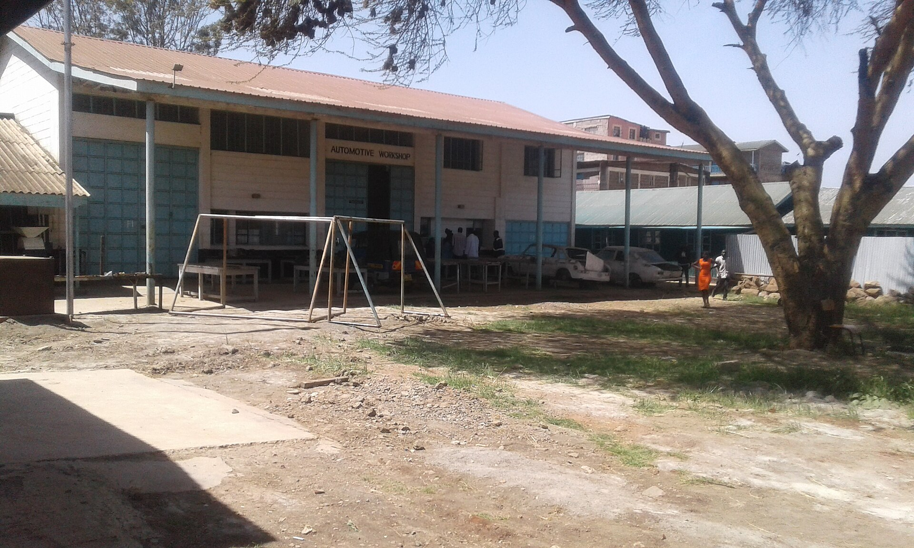
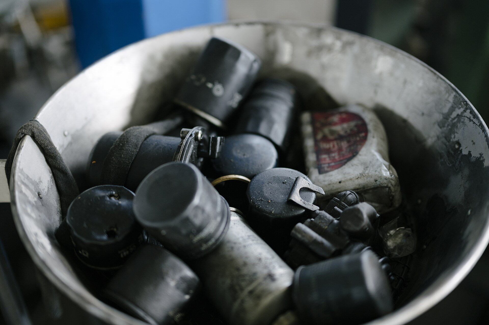
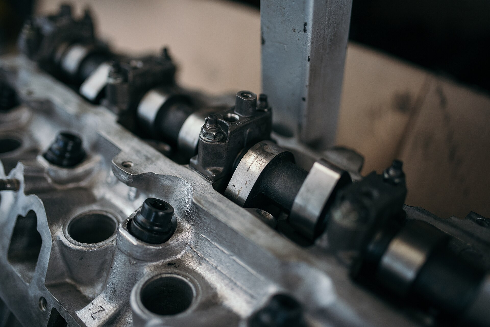
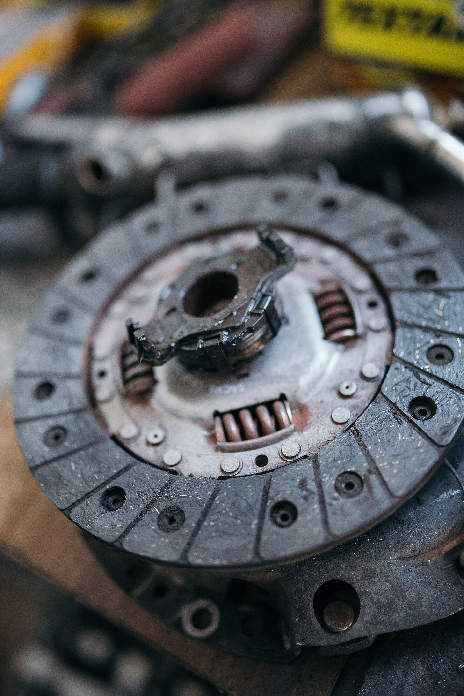

Örnek servis akışı
SERVİSTALEBİ
Aracınız için talebinizi hazırlayın.
Talep fişi oluştur
Aracınızı tanıyalım
Talep iletmek için aracın bilgilerini ve yaşadığınız belirtiyi yazın. Fiyat ve arıza tespiti bu sayfada verilmez.
Araç Marka, model ve varsa model yılı.
Belirti Duyduğunuz sesi veya gördüğünüz uyarıyı kendi sözlerinizle anlatın.
Gün Görüşmek istediğiniz günü seçin.
Sonrası İşletme uygunluk için sizinle iletişime geçer.
Kontrolün izleri
Servis fişi, araç ve belirtinin aynı yerde buluştuğu ilk adımdır.



Servis başlıkları
Örnek hizmet alanları. Gerçek kapsamı işletme ekler.
- Periyodik bakımÖrnek
- Fren kontrolüÖrnek
- Lastik ve tekerlekÖrnek
- Elektrik ve uyarı ışıklarıÖrnek
- Motor sesi ve çalışmaÖrnek
Bakım kontrol listesi
Kontrol kapsamı araca ve işletmenin hizmetlerine göre belirlenir.
- Yağ ve filtre durumu
- Lastiklerin genel durumu
- Aydınlatma ve gösterge uyarıları
- Fren sistemi için görsel kontrol
Talep nasıl ilerler?
Örnek işlem sırası. Uygulama biçimini işletme doğrular.
Bilgiyi iletin
Araç ve belirti bilgisi mesaj taslağında toplanır.
Uygunluğu görüşün
Servis, tercih ettiğiniz gün için sizinle iletişime geçer.
Onaydan sonra
İşlem ve ücret, araç incelendikten ve sizinle görüşüldükten sonra netleşir.
Servis talebi bırakın
Bu örnek sayfa bilgilerinizi bir mesaj taslağına çevirir. Veriler tarayıcıdan gönderilmez veya kaydedilmez.
Örnek tema. İşletmenin telefon, adres ve çalışma saatleri eklenmemiştir.
İşletme bilgileri
- Çalışma bölgesi
- Doldurulacak
- Çalışma saatleri
- Doldurulacak
- Telefon ve mesaj hattı
- Doldurulacak
- Adres
- Doldurulacak
Gerçek iletişim bilgileri eklenmeden sayfa müşteri kullanımına açılmamalıdır.